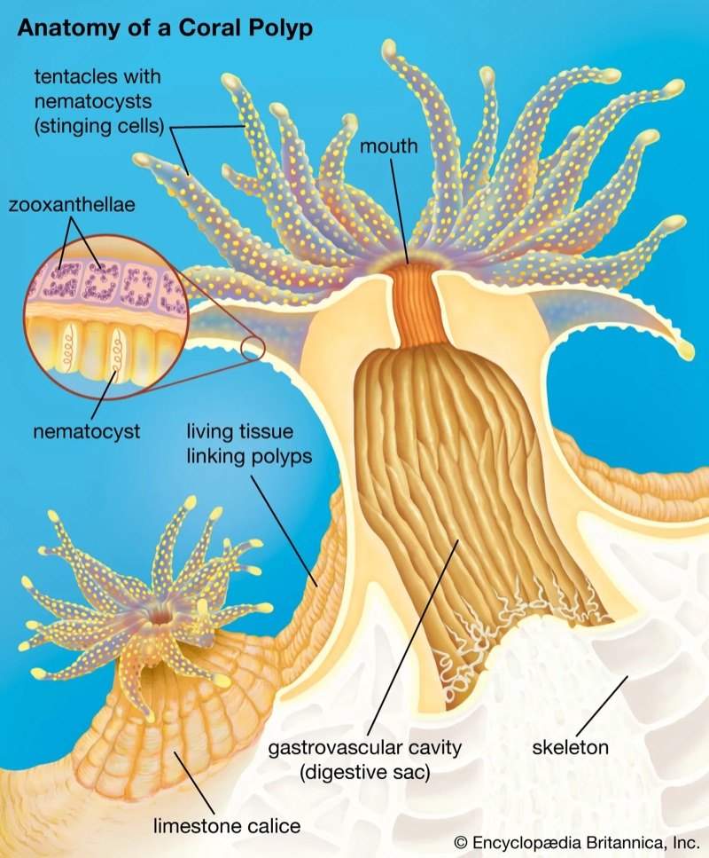
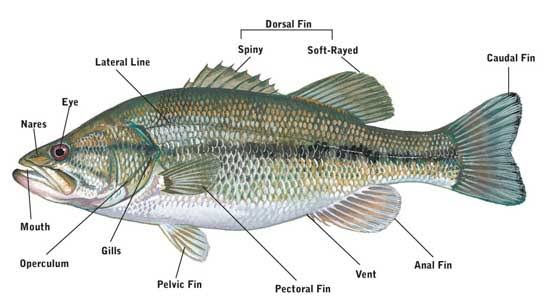
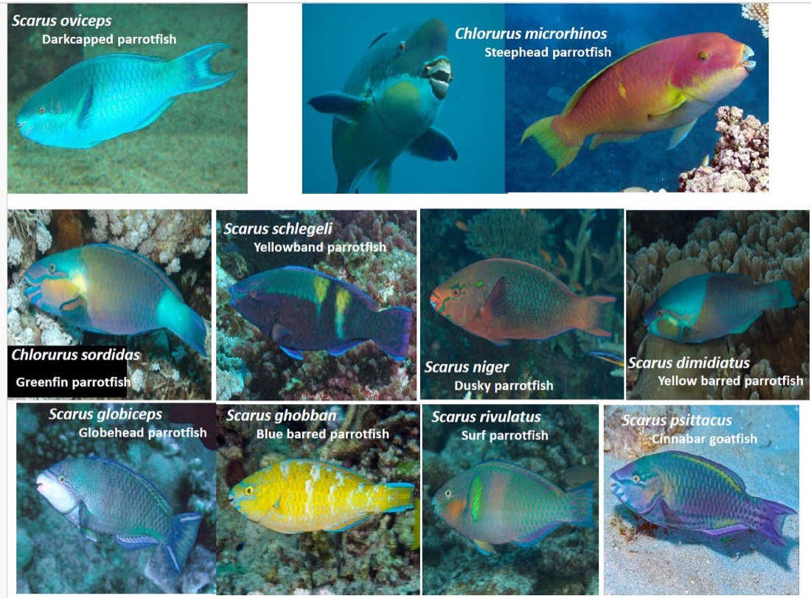

Coral Reef Ecosystems
CRE / October lecture notes / Exam study guide
From a coral polyp to an entire reef: the facts, mechanisms, field methods, and calculations.
Contents
Start here
CRE Exam Map
Coral Reef Ecosystems combines reef biology, ecological processes, monitoring, and conservation. This guide brings together the October lecture notes and the official 2026 field book. Australian Studies is excluded.
Assessment: use the handbook, note the conflict
The 2026 field book, printed p. 12, specifies written exam 50%, oral exam 20%, field notebook 30%. The earlier student notes say 40%, 20%, 40%. This guide prioritises the official handbook; confirm any later changes announced by the teaching team.
- Written: two hours. The handbook says lecture material is the focus, but does not specify written question types or permitted reference materials. The multiple-choice/true-false description in the other PDF belongs to Coastal Ecosystems, not CRE.
- Oral: a three-minute speech, followed by two minutes of questions. Choose one of the seven supplied topics. One A4 page or equivalent of handwritten prompts is allowed. No PowerPoint. One examiner; speech recorded for quality control.
- Field notebook: practical knowledge and skills from in-water work and other supplied material. Specific tasks assess interpretation, method comparison, and your own results; do not substitute invented survey data.
The handbook schedule places the written exam on Monday 12 October, morning, and the oral exam that afternoon. The schedule is explicitly subject to changes; it is not evidence of an exact start time or final room assignment.
The course's causal chain
- Coral animals and their symbionts acquire energy; corals build calcium-carbonate skeletons.
- Framework provides habitat for fish, invertebrates, algae, and interactions.
- Carbonate production and removal determine a budget, influencing framework, sediments, islands, and protection.
- Local pressures and climate stress change organisms and processes.
- Field measurements and maps reveal changes; management and restoration aim to reduce damage and sustain functions.
What the field book fills in
It supplies bioerosion surveys, benthic mapping, line-intercept cover, rugosity, coral photogrammetry, citizen science, and controlled heat-stress experiments. Identification plates cover practical examples but do not establish the lecture's full 26-family/28-species fish list. Missing slide-only diagrams and priority lists remain flagged.
Sources: Field Book printed pp. 6-7, 12-13; student lecture notes pp. 1, 20-47. Field Book printed page numbers are one lower than PDF viewer page numbers because of the cover.
CRE 1 / 2 October
Dangerous Marine Creatures
The central prevention rule is to avoid contact: wear suitable protective equipment, move slowly, do not touch or chase animals, and avoid nests or territories. A venomous animal delivers a toxin through a bite, sting, or spine; a mechanical injury can be serious even without venom.
Hazards and mechanisms
- Cnidarian stings: corals, fire corals, hydroids, anemones, and jellyfish possess stinging structures. A cnidocyte is the cell; a nematocyst is the capsule inside it that discharges. The notes call nematocysts cells, but this distinction is more precise. Symptoms described include burning pain, itching, rash within about 30 minutes, and blistering in severe cases.
- Coral cuts: sharp skeleton damages skin. Contamination, including organisms associated with coral mucus, can lead to infection. Swelling, tenderness, worsening redness, and sores require attention; do not treat the notes as a diagnosis guide.
- Sea urchins: brittle spines can break in skin. Injury may be mechanical; some species also have venomous structures. Allergic reactions are possible.
- Bristle worms: detachable bristles can penetrate skin; some carry irritating or venomous substances.
- Sea snakes: venomous bites are a risk. Usually avoiding provocation reduces risk, but apparently calm behaviour does not make handling safe.
- Stingrays: the tail spine can cause a deep puncture or laceration, with envenomation and tissue damage.
- Lionfish and stonefish: venomous spines can cause severe pain. Stonefish camouflage makes accidental contact particularly dangerous. Triggerfish are a separate territorial/bite hazard; do not memorise them as having lionfish-type venomous spines.
- Cone snails: a modified, dart-like tooth delivers venom. An attractive shell is not evidence that it is safe to pick up.
- Blue-ringed octopuses: potentially lethal venom; the notes name the hazard but do not give a mechanism or first-aid protocol.
- Sharks: bite/trauma hazard; the notes name them without detailed species-specific content.
Important correction: jellyfish treatment is species-specific
The PDF's "less vinegar and plenty of warm water" wording for box jellyfish is unsafe to learn as a general rule. ANZCOR guidance distinguishes potentially lethal jellyfish stings from bluebottles: vinegar is considered for potentially lethal species, not bluebottles; hot-water treatment is used for bluebottle pain. Suspected serious envenomation requires urgent emergency care. This is exam clarification, not a substitute for trained first aid or emergency advice.
Why can a coral cut be a problem even if it is not venomous?
The skeleton creates an open wound, and contamination can produce infection. Mechanical injury and infection are different mechanisms from venom injection.
Source: supplied PDF, pp. 20-21. Treatment correction: ANZCOR.
CRE 2 / 3 October
Coral Biology
A reef-building coral is an animal, not a plant or a rock. The polyp is the living animal; its corallite is the hard skeletal cup it secretes. Many polyps form a colony. Photosynthetic algae live in the animal's tissue, and the colony builds an aragonite calcium-carbonate skeleton.

The skeletal vocabulary
- Polyp: the animal, including mouth, tentacles, and digestive cavity.
- Corallite: the skeleton of one polyp; the notes give a size range from millimetres to centimetres.
- Calice: the upper, cup-like region of a corallite, bounded by the wall.
- Corallum: the skeleton of the whole colony. The PDF spells this "corralum".
- Septum (plural septa): a radial skeletal plate projecting inward from a corallite wall.
- Costae: radial skeletal ribs outside the wall, often continuing the septa.
- Theca: the wall enclosing the calice.
Growth form is not the same as corallite arrangement
Growth form describes the colony's overall shape: foliose (leaf-like), branching, massive (solid mound), brain-like, plate/tabulate, encrusting (thin layer over substrate), hemispherical, or corymbose (branches forming a table-like cluster). Corallite arrangement describes how individual skeletal cups are organised:
- Plocoid: separate corallites, each with its own wall.
- Phaceloid: separate tubular corallites forming a branching/bundled colony; "uniform height" in the notes is not the defining feature.
- Cerioid: adjacent corallites share walls; spelt "ceroid" in the PDF.
- Meandroid: polyp mouths form valleys with shared walls.
- Flabello-meandroid: valleys are separate rather than sharing common walls.
- Dendroid: tree-like branching with distinct corallites.
- Thamnasterioid: poorly defined corallite boundaries with confluent septa.
Do not identify species by colour alone. Symbionts, host pigments, condition, and lighting affect colour. Skeletal features and colony structure are more useful. Morphology also varies within a colony, across habitats, and between regions.
Species, geography, and hybrids
The notes emphasise Indo-Pacific versus Caribbean assemblages and the central-Indonesian/Coral Triangle biodiversity hotspot. Pavona maldivensis illustrates how different forms can be mistaken for separate species. Morphological difference is not automatically evidence of a species boundary.
The Caribbean hybrid Acropora prolifera derives from A. palmata and A. cervicornis. In the case described, samples were first-generation (F1) hybrids, morphology depended on parental contribution, and propagation was asexual. Keep "not recognised as a species" and "not sexually reproducing" as the lecture case's framing, not a universal rule that all hybrids are sterile.
Where the coral's energy comes from
Zooxanthellae is a traditional name for symbiotic dinoflagellates, now usually discussed as members of Symbiodiniaceae. They live in the coral's gastrodermal cells, called endodermal cells in the notes. Photosynthesis turns light energy and inorganic carbon into organic compounds. Some of those products are transferred to the coral; the notes highlight glycerol and conversion to fats.
The coral spends this energy on growth, reproduction, defence, and maintenance. The algae gain a protected habitat and access to inorganic nutrients from the host. Both benefit: this is mutualism. The animal itself does not become a photosynthetic plant.
Heterotrophy means obtaining energy by consuming organic food. Coral tentacles and nematocysts capture prey. This can partly support bleached corals, but capacity varies by species and growth form. Stable-isotope analysis can help infer food sources because different sources leave different chemical signatures.
Calcification
The simplified reaction is:
Ca2+ + CO32− → CaCO3
Ca2+ is a calcium ion; CO32− is a carbonate ion; CaCO3 is calcium carbonate. Coral skeleton is the mineral form aragonite. This is a simplified description, not the full chemistry of the calcifying fluid.
Corals regulate conditions, including pH, at the calcification site. That gives some control but does not make them immune to acidification or dissolution. The notes report declining calcification and suppression lasting up to four years after some bleaching events.
Measuring growth
- Staining and sampling: mark a growth boundary, then inspect new skeleton after growth. Removing samples can be destructive.
- Buoyant weight: estimate skeletal mass from weight while submerged. Unlike the PDF's grouping, this need not be destructive.
- Tagging: revisit the same colonies to measure change; less destructive but measurement method still matters.
- Photogrammetry / structure from motion (SfM): reconstruct three-dimensional shape from overlapping photographs; compare area, volume, or structure over time without removing the coral.
Reproduction: two routes, two stages
Asexual reproduction creates genetically related polyps through budding, or new colonies through fragmentation. Intratentacular budding occurs within the tentacle ring; extratentacular budding occurs outside it. "Extracellular" in the notes is likely a transcription error.
Sexual reproduction: many corals are hermaphrodites (produce eggs and sperm), while some have separate sexes. Broadcast spawners release gametes into the water for fertilisation. Environmental cues can include lunar, seasonal, and temperature signals; timing varies, so "full moon = reduced currents" is not a general rule. Brooders retain early development and release larvae; the notes describe larvae already containing symbionts.
A planula is a larval coral. It disperses, becomes competent to settle, attaches to suitable substrate, and metamorphoses into a juvenile polyp. Settlement is a high-mortality bottleneck. The notes give a larval time of less than three weeks in the case described, but durations and spawning seasons differ among species.
Bleaching, resistance, and resilience
Bleaching is the loss of symbiotic algae and/or their pigments, revealing the pale skeleton through tissue. A bleached coral may still be alive. Prolonged energy shortage can cause mortality.
Resistance means suffering less damage during a stress event; resilience means recovering afterwards. More heat-tolerant symbionts may improve resistance but can carry growth trade-offs. The lecture uses old clade labels: D is often discussed as heat tolerant; some C subgroups also tolerate heat. Neither label guarantees the same response in every host.
The notes mention microbiome transplantation as a possible resilience intervention, and research at Heron Island relating temperature, colour, and bleaching. They also record five GBR mass-bleaching events in eight years ending in 2024: keep that as historical lecture context, not a count through today.
Downstream chain: bleaching → possible coral death → reduced living cover and altered colony structure → erosion/lower rugosity → changed fish habitat and populations → broader ecosystem effects. Rugosity means surface complexity/roughness, not simply coral cover. Dead skeleton can initially retain structure before it erodes.
Why can a reef lose ecological function after coral mortality even if the skeleton remains?
Living tissue and some food relationships are lost immediately. Later, skeleton breaks down and habitat complexity declines. Fish that need living coral and fish that need shelter may therefore respond on different time scales.
Source: PDF pp. 21-24. Skeletal terminology and mechanisms clarified; heat-stress calculation appears in Climate.
Terminology cross-checks: NOAA skeletal anatomy, Corals of the World glossary, and NOAA coral reproduction.
CRE 3 / 4 October
Coral Reef Fish
Learn the link between form, feeding, habitat, and ecological role. An identification answer needs a diagnostic feature, not just a colour. The lecture lists two major groups: bony fish (Osteichthyes) and cartilaginous fish (Chondrichthyes, including sharks and rays).
Body shape tells you something about lifestyle
- Fusiform: streamlined/spindle-shaped; useful for efficient sustained swimming.
- Laterally compressed: thin side-to-side; common in manoeuvrable reef fish.
- Depressed: flattened top-to-bottom; useful for bottom-associated life, as in rays.
- Anguilliform: eel-like; useful for moving through crevices.
- Globiform: rounded; not designed for fast sustained swimming.
Mouth position and shape help indicate how food is collected; fins affect propulsion, steering, and stability. Record whether a fish is benthic (bottom-associated), mid-water, or pelagic (open-water), and whether it schools, pairs, lives alone, or forms a symbiosis.

Identification and ecological roles
- Damselfish (Pomacentridae): one nostril on each side, interrupted lateral line, often a forked tail. Includes clownfish/anemonefish. Diets include algae, plankton, and mixed foods; many are territorial. The notes say most are small, largest about 30 cm, common in shallow tropical reefs.
- Butterflyfish (Chaetodontidae): laterally compressed, disk-like body; small, sometimes elongated mouth; prominent spiny dorsal fin; rounded caudal fin in the notes. False eyespots or an eye-crossing stripe can confuse predators. Benthic diets vary, including coral tissue and invertebrates.
- Angelfish (Pomacanthidae): the key distinction from butterflyfish is a strong preopercular spine, on the gill-cover region. Continuous dorsal fin, rounded tail, often striking juvenile-to-adult pattern changes. Brightness alone is not diagnostic.
- Groupers / rock cods: predatory reef fish. Coral trout are colourful, medium-sized examples; Queensland groupers can be very large. The notes do not provide a full diagnostic key.
- Wrasses (Labridae): often prominent canine teeth and pectoral-fin swimming. Cleaner wrasses remove ectoparasites at cleaning stations. Humphead/Maori/Napoleon wrasse names refer to the large humphead wrasse example; facial lines help identification. Not every wrasse is a cleaner.
- Moray eels: often shelter in holes; strong smell compensates for limited vision. The notes list cephalopods, molluscs, and crustaceans as prey, and groupers, barracudas, and sea snakes as predators.
- Parrotfish: fused beak-like teeth; often a crescent tail; pectoral fins for normal swimming, tail for bursts. Scraping removes algae and sometimes carbonate, producing sand. Many species change sex from female to male. Grazing can maintain settlement space for corals; scraping can also contribute to bioerosion.
- Snappers: common food fish, often schooling; slightly upturned snout in the lecture key. Can be confused with emperors. Do not assume the snout alone resolves every species.
- Sweetlips and grunts: thick lips, low-set mouths, rounder heads than the snapper example.
- Triggerfish: locking/trigger-like first dorsal spine; often solitary daytime carnivores; use dorsal and anal fin undulation for propulsion.
- Porcupinefish: inflate and raise spines; broad fins and relatively large eyes compared with pufferfish in the notes; strong teeth crush hard prey such as urchins and crustaceans.
- Lionfish and stonefish: venomous-spine hazards. Lionfish have conspicuous fin rays; stonefish are strongly camouflaged.
- Tangs, rays, and sharks: named in the lecture notes but not given detailed identification descriptions.
Why survey fish?
Surveys estimate abundance, diversity, size structure, biomass, or functional roles. Those inform ecological condition and fisheries/economic decisions. BRUV means baited remote underwater video. It samples without a diver at the camera, but bait changes which species are attracted; it is not a neutral census of every fish. AI may assist annotation, but results still need validation.
Coverage gap: the notes say "26 families, 28 species" but do not supply that complete list or all species images. This guide cannot reconstruct a complete identification exam key from those numbers. The missing lecture key is especially important for a field book or oral identification exam.
How can parrotfish both help corals and erode reefs?
Removing algae can free settlement space and reduce competition. Scraping or excavating the substrate also removes carbonate. The net ecosystem effect depends on species, size, feeding behaviour, and the condition of the reef.
Source: PDF pp. 24-27.
CRE 4 / 4 October
Reef Invertebrates
An invertebrate lacks a vertebral column. It is not one taxonomic group: reef invertebrates belong to many phyla. A phylum is a broad classification within a kingdom, not the largest level of animal classification.
Sponges / Porifera
Sponges lack the true tissues and organs found in many other animals. Coordinated cell activities carry out feeding and transport. Choanocytes (collar cells) move water and capture food; water enters through small pores and exits through larger openings called oscula. Filtering bacteria and other particles links sponges to reef nutrient cycling. Some boring sponges also erode carbonate.
Molluscs / Mollusca
The basic body plan includes head, muscular foot, visceral mass (organs), mantle (tissue that secretes a shell), and often a shell. Different groups modify or lose parts of that plan. A radula is a tooth-bearing feeding ribbon; it can scrape algae or be modified for specialised feeding. Bivalves do not have a radula.
- Gastropods: snails and slugs, including grazers and predators. Moon snails typically drill prey shells; the PDF's venomous dart description fits cone snails, not moon snails.
- Nudibranchs: sea slugs with specialised diets. Some retain defensive chemicals from prey; bright colours can warn predators. Some aeolid nudibranchs retain undischarged cnidarian nematocysts in their cerata, the projections on their backs.
- Bivalves: two valves/shells. Many filter-feed using gills that also exchange gases. Giant clams are the large tropical exception noted in class. Do not generalise haemoglobin to every bivalve from the notes.
- Cephalopods: squid, cuttlefish, octopuses; active predators on fish and crustaceans. Complex behaviour and colour changes aid signalling and camouflage. Brooding and life histories vary, rather than every cephalopod brooding in the same way.
Echinoderms / Echinodermata
Adults typically have five-part radial organisation; larvae are generally bilateral. A water vascular system operates tube feet for movement, attachment, and feeding. The five groups in the notes are sea urchins, sea cucumbers, sea stars, brittle stars, and crinoids (sea lilies/feather stars).
- Sea urchins: a calcareous internal skeleton called a test; spines for defence and movement; tube feet for attachment. Aristotle's lantern is the jaw apparatus, generally beneath the animal. Herbivorous grazing can remove algae and erode substrate.
- Sea cucumbers: many process sediment and organic matter; some suspension-feed. Some eject sticky defensive Cuvierian tubules; the PDF's "anal ejaculate" is not the anatomical term. Sediment processing recycles nutrients.
- Sea stars: can regenerate arms; crown-of-thorns sea stars evert the stomach over coral and digest tissue externally. Their nervous system includes a nerve ring and radial nerves, not a vertebrate-like brain.
- Brittle stars: slender, articulated arms used for rapid movement; distinct from the broad-arm sea-star body form.
- Crinoids: feathery arms for suspension feeding.
Arthropods / Arthropoda
Jointed appendages and an external skeleton are defining features. Marine examples include shrimps, crabs, and lobsters. An exoskeleton cannot expand continuously, so growth requires moulting. Snapping shrimps use a specialised claw to generate a rapid, powerful snap involved in prey capture, defence, and communication.
Two groups easy to misplace
Fan worms are annelids, not arthropods, despite being nested under arthropods in the notes. Rapid withdrawal is enabled by fast neural signalling, including large nerve fibres.
Tunicates are chordates, despite being invertebrates. Their larvae have chordate features including a notochord and dorsal nerve cord, many of which are lost or modified in the sessile adult. "Chordate" does not mean "vertebrate".
Compare sponge filtration, urchin grazing, and sea-cucumber feeding.
A sponge filters particles from water; an urchin scrapes food from surfaces with its jaw apparatus; many sea cucumbers ingest/process sediment. These are different pathways through which organisms move energy and recycle material.
Source: PDF pp. 27-29. Misplaced taxa and feeding descriptions corrected.
Mollusc clarification: Australian Museum molluscs and cone shells.
CRE 5 / 5 October
Earth Observation and Reef Maps
A habitat map records what is where. It helps scientists locate reef habitats, design sampling, compare conditions, and manage use. A satellite image is not already a coral-cover map: light must be measured, corrected, interpreted, and checked against reality.
Spatial vocabulary
- GIS: geographic information system; stores, analyses, and combines information with known locations.
- Raster: a grid of cells/pixels, each with a value. A satellite image and a depth grid are examples.
- Vector: points, lines, or polygons. Survey locations are points; transects are lines; habitat boundaries can be polygons. Vector is not only polygons.
- Georeferencing: attaching real-world coordinates to an image/object so it aligns with other spatial data.
- Datum: a reference framework for Earth's shape and positions; "origin" alone is incomplete.
- Coordinate system: the system used to express position, such as latitude/longitude or a projected grid.
- Projection: mathematical conversion from curved Earth to a flat map; it introduces distortion. Layers using incompatible references can appear displaced.
What the sensor actually sees
The recorded signal combines the atmosphere, sea surface, water column, and seabed. Reflection/scattering redirects light; absorption removes it from the measured path; transmission allows it to pass through; fluorescence re-emits light at a different wavelength. Tides, waves, suspended sediment, and dissolved/organic material alter the signal.
Depth matters: light attenuates on the way down and back up. Red light is absorbed more quickly than blue/green. Blue/green bands are therefore particularly useful for shallow-water mapping. The same bottom type may look different at different depths, and different habitats may look similar through turbid water.
Sun glint is surface reflection that can hide the bottom. Clouds obscure images; rough water changes reflection; a pixel can contain several bottom types. If the bottom is not visible, optical benthic classification is unreliable, although water properties may still be mapped.
Active versus passive
Passive sensors measure naturally available energy, often reflected sunlight: ordinary photographs and many multispectral satellite images. Active sensors emit energy and measure the return: LiDAR uses laser pulses, sonar uses sound. The notes identify this as a question but leave the answer unfinished; this is the missing distinction.
Resolution, extent, and information
The lecture gives indicative scales: diver observations about 1 mm, drone imagery about 5 cm, satellite pixels around 5-30 m. These are examples, not universal sensor limits. Spatial resolution is pixel/detail size; extent is area covered; spectral resolution describes wavelength bands. A 10 m pixel covers 100 m2, not 10 m2. Small colonies can be mixed into one satellite pixel.
Image to habitat map: the workflow
- Define the question and classes: for example sand, seagrass, coral-dominated substrate. Your classification scheme must match the management question.
- Acquire appropriate imagery: choose resolution, coverage, timing, water clarity, and suitable bands.
- Correct the data: radiometric correction addresses sensor/measurement effects; atmospheric correction addresses the atmosphere; geometric/georeferencing correction aligns locations. The PDF says further preprocessing steps are on unavailable slides.
- Gather training data: known field examples show the algorithm what each class looks like.
- Classify or model: pixel-based classification labels individual pixels; object-based classification groups coherent image objects; continuous models may estimate depth or other quantities instead of discrete classes.
- Validate independently: compare predictions with held-out field observations, not just the same examples used for training.
A spectral signature is the pattern of measured response across wavelengths. Supervised classification learns signatures from known examples, then applies them elsewhere. Combining fine drone data with broad satellite maps can add detail in priority areas. Coverage and accuracy trade off; neither more pixels nor a confident algorithm guarantees ecological accuracy.
Why can "dark pixel = coral" fail?
Depth, water clarity, shadow, surface conditions, and mixed substrates can also darken a pixel. Classification needs multiple bands, environmental corrections, and independent field validation.
Source: PDF pp. 29-31. Active/passive distinction and validation workflow are explanatory additions.
CRE 6 / 5 October
Field Monitoring
Ecological sampling measures what lives on a reef, how much is present, or what processes occur. Monitoring repeats comparable measurements through time. The field book now supplies the practical methods absent from the lecture notes.
Match the variable to the method
- Line-intercept transect (LIT): measure lengths over substrate categories; estimates proportional cover.
- Point-intercept: classify what lies under fixed points; estimates cover from point counts.
- Belt transect: count organisms in a defined area; estimates abundance/density and can record sizes.
- Photo quadrat: photograph a standardised patch, then annotate categories; gives a permanent image record.
- CoralWatch: score coral colours as a bleaching-related indicator; not a census of cover or species.
- Chain and tape: compare contoured surface distance with straight distance; measures rugosity.
- SfM: reconstruct 3D shape from overlapping photos; repeat to measure change.
Cover (%) = intercepted category length ÷ total transect length × 100. For point-intercept data, use category points ÷ total points × 100. Example: 3.2 m of a 10 m line over live hard coral gives 32%. This is cover, not colony count.
Monitoring, calibration, validation
Baseline records a reference condition. Monitoring tracks changes. Calibration fits a model to field data; validation tests predictions against independent data. Sampling only convenient healthy colonies biases conclusions. Repeat comparable effort, depth, habitat, timing, and methods, and retain metadata.
Replicates help describe variability. Observations next to one another may not be independent, and repeatedly photographing one coral does not create many independent coral colonies. Before/after measurements with suitable controls are stronger for impact attribution than one visit after a disturbance.
Why can 40 fish yesterday versus 60 today fail to show a population increase?
Area, effort, visibility, tide, time, fish movements, and detection can differ. Standardise the survey and replicate before attributing the difference to abundance change.
Sources: lecture notes p. 31; Field Book printed pp. 17, 23-27, 33, 38-44, 48-50. The detailed course protocols follow below.
CRE 7A / 5 October
Marine Plants and Algae
"Marine plants" here includes organisms with very different biology: microalgae/phytoplankton, macroalgae, seagrasses, and mangroves. Algae are not simply small flowering plants. Benthic means on/associated with the bottom; pelagic means in the water column.
Microalgae and plankton
The notes list diatoms and dinoflagellates, plus cyanobacteria. Cyanobacteria are bacteria, not eukaryotic algae; some fix atmospheric nitrogen into biologically usable compounds. Chlorophyll a is widely used as a proxy for photosynthetic plankton biomass. The notes contrast high polar productivity/chlorophyll with low tropical surface nutrients. Do not translate this into "all marine biodiversity is higher at the poles": tropical reefs are a major diversity hotspot.
Three macroalgal groups
- Green algae / Chlorophyta: chlorophyll a and b. Unicellular and multicellular forms. Green lineages are related to the ancestry of land plants. Uses noted: wastewater treatment, biofuels, nutritional supplements.
- Brown algae: chlorophyll a and c plus fucoxanthin, a brown pigment. The notes call them Phaeophyta. Mostly multicellular; a holdfast attaches them to substrate, while gas bladders in some forms lift tissue toward light. A holdfast is not a nutrient-absorbing root. Alginate is used as a thickener/stabiliser, including in foods and toothpaste.
- Red algae / Rhodophyta: chlorophyll a and accessory pigments including phycoerythrin, which helps absorb available underwater light. Some occur at considerable depth. The notes also mention chlorophyll d; pigment details vary, so do not assume every red alga has the same pigment complement. Nori is an edible red-algal product.
Three Heron categories
Turf algae are short assemblages rather than one species. Halimeda is a calcifying green alga that contributes carbonate segments/sediment. CCA means crustose coralline algae: calcifying red algae that encrust surfaces, help bind reef framework, and can provide coral settlement cues. Not all algae have the same effect on reefs.
What controls algae?
Bottom-up control comes from resources/conditions such as light, nutrients, and carbon supply. Top-down control comes from consumers such as grazing fish and urchins. Fast algal growth after nutrient enrichment or reduced grazing can shade corals, occupy settlement space, and interfere with recruitment. Warmer conditions do not help every alga indefinitely.
A phase shift is a change in the dominant community state, for example coral-dominated to macroalgal-dominated. Recovery can depend on growth of surviving corals, restored herbivory, coral competitive ability, and seasonal seaweed decline. A phase shift is not necessarily instantaneous or permanently irreversible.
Seagrasses and blue carbon
Seagrasses are marine angiosperms: flowering plants with true roots and vascular transport tissue. Meadows store organic carbon in biomass and sediments, helping create blue-carbon stocks. Carbon stock is an amount stored; sequestration rate is storage per time. They are not interchangeable.
The lecture-note figures are 0.1% of ocean area, 18% of carbon storage, about 140 Mg per hectare in the top soil layer, and "40 times" forest storage efficiency. Mg means megagram, equivalent to a metric tonne. The notes do not specify all denominators, soil depths, or time scales: keep these as lecture-reported figures, not universal rates. Mangroves are named, but no detailed mangrove lecture content is supplied.
Does "more algae" always mean worse reef health?
No. CCA can bind framework and support settlement, and Halimeda produces carbonate sediment. Excess macroalgae can inhibit coral recovery. You need to identify the algal group, abundance, and ecological role.
Source: PDF pp. 31-33. Marine Plants and Ecology share lecture number 7 in the source.
CRE 7B / 6 October
Ecological Principles
A reef is a network of relationships. Explain the process and its consequence, not just the name: who benefits, who loses, and how does that change the community?
Why reefs matter
The lecture notes say reefs support about 25% of marine species in about 1% of ocean area, support 100 million people, and can absorb up to 97% of wave energy. These are broad lecture estimates, not fixed values for every reef. Shoreline protection depends on reef shape, elevation, condition, and incoming waves.
The productive-reef / low-nutrient-water puzzle
Tropical surface waters often have low nutrient concentrations and low chlorophyll. Reef productivity is nevertheless supported by recycling, symbiosis, and other food pathways. Corals provide habitat and recycled inorganic nutrients; symbionts provide photosynthetic products. The notes' statement that corals "fertilise" algae with oxygen is misleading: photosynthesis uses inorganic carbon and releases oxygen. Corals and symbionts also exchange nutrients such as nitrogen and phosphorus.
Structure shelters small fish; algae feeds grazers; smaller animals support predators. Piscivores eat fish. A simple chain is useful, but real reefs have food webs with many overlapping diets.
Symbiosis and competition
Symbiosis is a close association between species; it does not automatically mean both benefit. Mutualism means both benefit, such as a cleaner wrasse obtaining food while reducing a client's ectoparasites.
Competition occurs when organisms use a limiting resource such as space or light. Corals may damage neighbours with sweeper tentacles or extruded mesenterial filaments. Competitive exclusion predicts that species competing identically for the same limiting resource cannot coexist indefinitely under constant conditions. Reef heterogeneity, disturbance, predation, and different resource use complicate that simplified outcome.
Disturbance and succession
Disturbance removes organisms or changes resources/habitat. Succession is the subsequent change in community composition. The intermediate disturbance hypothesis proposes high diversity at intermediate disturbance: too little can allow dominant competitors to exclude others; too much can prevent many species establishing. It is a hypothesis with context-dependent support, not a law that more disturbance always improves diversity.
Herbivory and feedbacks: Jamaica
In the 1980s Jamaican example, loss of Diadema urchins reduced grazing. Algae expanded, helping inhibit coral recruitment. The mechanism matters: losing a grazer changes competitive conditions for coral, even though the grazer is not a coral.
A positive feedback amplifies change; "positive" does not mean beneficial. For example, more algae may hinder coral recovery and sustain an algal state. A negative feedback counteracts change. The PDF's "positive feedback loops are vital for stabilisation" wording conflates amplification and stabilisation.
Trophic cascades and fishing
A trophic cascade occurs when a change at one feeding level indirectly changes others. Removing predators can release their prey; removing herbivores can release algae. Whether algae rises or falls depends on who is actually removed and the food-web structure.
The notes contrast spearfishing, often aimed at predatory fish but also parrotfish, with nets/traps that may heavily affect herbivores. Do not memorise "fishing increases herbivores": direct removal and indirect predator-release effects can oppose one another.
Marine protected areas (MPAs) restrict activities to protect ecological processes. Their effects depend on rules, enforcement, placement, connectivity, and pressures outside boundaries. The lecture refers to an unavailable more complex food-web diagram.
Why might predator removal and herbivore removal have different effects on coral?
Predator removal can indirectly alter grazer populations, while herbivore removal directly reduces grazing. Less grazing can allow algae to occupy coral settlement space. The outcome depends on diets and which fish are targeted, so trace the actual links.
Source: PDF pp. 33-34.
CRE 8 / 6 October
Carbonate Budgets and Modelling
A carbonate budget asks whether a reef is making more calcium carbonate than it loses. It connects organisms observed today with long-term framework, sediment, islands, and coastal protection.
The accounting
Net carbonate production = gross carbonate production − carbonate removal.
Common units are kg CaCO3 m−2 yr−1: kilograms of calcium carbonate per square metre per year. Positive means production exceeds removal; negative means removal exceeds production. A positive budget is not automatically the same number as vertical reef growth.
- Producers: corals, CCA/other calcifying encrusters, molluscs, and sediment-producing calcifiers such as Halimeda.
- Bioerosion: biological removal by scraping/excavating fish and urchins, macroboring sponges/worms, and microboring organisms.
- Physical erosion: storms and breakage.
- Chemical dissolution: carbonate dissolves under suitable chemical conditions. Ocean acidification is not an organism and is not itself "bioerosion".
Worked budget
Suppose corals produce 5.0 and encrusters produce 1.0 kg m−2 yr−1. Fish remove 2.0, urchins 0.5, and internal borers 1.0 in the same units.
- Gross production = 5.0 + 1.0 = 6.0.
- Measured bioerosion = 2.0 + 0.5 + 1.0 = 3.5.
- Net census budget = 6.0 − 3.5 = +2.5 kg m−2 yr−1.
If coral production drops to 1.0 and everything else remains unchanged, net becomes 2.0 − 3.5 = −1.5. This is a hypothetical calculation, not a field result. Unmeasured dissolution or physical export can make the full budget differ from the census estimate.
Framework versus sediment
Framework is the coherent reef structure; sediment is loose carbonate material. Scraping may remove framework but create sediment rather than remove all carbonate from the system. Material can fill reef gaps, nourish beaches/islands, or be exported. You need a defined boundary to know which transfers count as loss.
Converting mass production into an accretion rate (vertical growth per year) requires information about density, porosity, retention, and where carbonate is deposited. The notes mention this conversion but do not supply a formula.
Three approaches to estimating production
- Biological census budget: survey producers and eroders, then apply measured/published rates. Gives process detail but depends on assumptions.
- Hydrochemical estimate: infer net calcification/dissolution from water chemistry and exchange. Interpretation depends on water movement and the area/time represented.
- Reef cores: use dated skeleton/framework to reconstruct longer-term accumulation. A core integrates the past rather than only today's organisms.
ReefBudget: observations multiplied by rates
The notes identify ReefBudget as a standardised rapid census method introduced in 2012, combining approximately 20 field measurements with published biological rates. It is not just counting corals.
- Corals: notes specify four to six 10 m transects recording substrate cover; combine cover with taxon-specific growth/calcification rates. Published rates simplify comparisons but may miss site-specific stress or growth differences.
- Encrusters: measure cover and apply published production rates, or deploy substrates to measure local rates.
- Urchins: abundance and size determine estimated erosion using feeding relationships.
- Fish: abundance, size, species, bite rates, and erosion per bite determine removal. Stereo-video uses two cameras to estimate length; size matters because one large excavator is not equivalent to one small scraper.
- Internal borers: substrate deployment with before/after CT scans, rubble analysis, or cover/rate estimates.
- Sediment producers: identify components under a microscope and estimate abundance and turnover. This is difficult and uncertain.
Available fish methods include visual transects, diver-operated video, baited/unbaited cameras, point counts, and timed swims. Select the method for the quantity needed: abundance alone does not give bite activity or biomass.
Why islands are not passive objects
Reef islands can change shape, position, and sediment volume. Their response to sea-level rise depends on sediment production/supply, waves, transport, geology, and infrastructure, not elevation alone. The lecture reports about half of Pacific islands keeping up or growing in the studies discussed; that does not guarantee every island is safe or habitable.
Models let users vary stress and management assumptions. The notes highlight that naturally turbid reefs may tolerate sediment loads better than clear-water reefs, and that repeated sediment pollution can shift baselines. Always state the assumed rates and uncertainty rather than treating model output as a certain forecast.
A reef has high live-coral cover. Must its carbonate budget be positive?
No. Production depends on coral identity and growth, not cover alone, while fish, urchins, borers, physical loss, and dissolution also matter. High cover can coexist with high erosion.
Source: PDF pp. 35-37. Formula examples are original.
CRE 9 / 7 October
Local Threats and Management
Local pressures differ among reefs. An exam answer should connect pressure → mechanism → ecological effect → management response. "Pollution is bad" does not explain which process is damaged.
Coastal development and water quality
Construction can directly remove coral and change currents, sediment transport, runoff, sewage, and industrial discharge. Increased sediment can reduce light, smother surfaces, and interfere with feeding/settlement. Reef removal can increase coastal erosion and land retreat.
Singapore case: the notes report about 70% reef loss, high turbidity/sedimentation, coral depth contraction to less than 6 m, but limited loss of coral biodiversity. Five large colony-relocation projects had less than 11% survival in the example. Later approaches included substrate modification, artificial reefs, nurseries, and transplantation. These are case-specific outcomes, not a universal relocation success rate.
ICZM means integrated coastal zone management: coordinate environmental, cultural, and economic uses of the coastal zone rather than treating each project independently. Kaneohe Bay, Hawaii: sewage diversion/removal illustrates how addressing a major pressure can enable recovery; planting more coral without removing the pressure may fail.
Overharvesting and destructive fishing
Larger boats and stronger/more efficient gear can increase extraction. Removing fish changes food webs; destroying substrate removes habitat itself. Sea cucumbers are not fish, despite the PDF's "most over-harvested fish" phrase. Their exploitation removes sediment processing/nutrient recycling and income for coastal communities. Low adult density can also reduce fertilisation success in broadcast-spawning populations.
- Blast fishing: explosives kill organisms and shatter reef framework.
- Bottom trawling: gear dragged across the seabed can destroy habitat.
- Cyanide fishing: chemical capture for aquarium/live-food trades can harm non-target organisms and coral. Notes date its Philippine aquarium-trade use to the early 1960s.
- Ghost fishing: lost gear continues trapping organisms.
The lecture reports live fish worth up to 25 times dead fish and a Southeast Asian live-reef-fish market around US$1.2 billion in the cited context. Those incentives explain capture pressure; they are not current price guarantees.
Management options: enforced bans, affordable sustainable gear, livelihood alternatives, protection of fragile habitats, local stewardship, and credible fisheries certification. A ban without enforcement or alternatives may not change behaviour.
Oil, groundings, and plastics
Oil can damage tissue, impair feeding, reduce growth/reproduction, and accumulate through organisms. Shipping routes can cross important reefs. Douglas Shoal: the Shen Neng 1 grounded in April 2010; the notes record about five tonnes of oil spilled. Groundings also physically damage reef substrate, so spill volume does not capture the whole impact.
The PDF gives historical plastic estimates: eight million tonnes per year, about 80% land/rivers versus 20% marine sources, and concentration in a small number of rivers. Its "60-90% from 10 rivers" statistic has an unspecified denominator and should not be recited as a settled fraction of all ocean plastic. Plastic can entangle, abrade, smother, or be ingested. The annual oil-spill estimate is also inadequately contextualised in the notes.
Ballast water and invasive species
Ships take on water for stability, carrying organisms, eggs, cysts, and larvae. Discharge elsewhere can introduce non-native organisms. Establishment depends on survival and environmental match; being transported does not guarantee invasion. Management includes ballast-water treatment, filtration, UV/chemical technologies, and regulations.
Lionfish: native Indo-Pacific fish introduced to the western Atlantic/Caribbean, where predation on native prey and rapid reproduction are important concerns. Aquarium releases are the key pathway usually discussed; do not assume the PDF's generic ballast-water example establishes the actual lionfish pathway. Florida removal incentives are a management example.
The notes quote ten billion tonnes of ballast transported annually, "7,000 species each hour," and an invasion every nine weeks. The latter two lack adequate units/context; retain the concept, but check the lecture source before using them as quantitative evidence.
Antifouling
Biofouling is organisms growing on hulls. It increases drag/fuel use and can move species between regions. Antifoulants reduce attachment, but toxic compounds such as historical TBT (tributyltin) can damage non-target organisms. The management problem is to reduce fouling without transferring the cost to the ecosystem.
Crown-of-thorns and the GBR
Crown-of-thorns sea stars (COTS) are native coral predators, not automatically invasive species. At outbreak densities, stomach eversion and digestion remove large areas of coral tissue. The notes give 5-6 m2 consumption and survival for up to nine months without feeding, but the consumption figure has no time unit. Nutrient enrichment may improve larval food availability and survival, contributing to outbreaks; it is not the only control.
Historical statistic corrected: the 50.7% decline refers to GBR coral cover in 1985-2012, not the last 27 years from today. The study attributed 48% of the loss to cyclones, 42% to crown-of-thorns, and 10% to bleaching. The PDF's 24/21/5 approximates portions of the total starting cover, not those shares of loss. AIMS's account of the study provides the context.
People and sustainable use
GBR management includes Traditional Owners and enduring Sea Country relationships, climate action, land/water management, threatened species, heritage, and tourism. Recreational use can be extractive (fishing) or non-extractive (diving/snorkelling), but non-extractive does not mean impact-free. Anchoring, trampling, and wildlife disturbance can damage reefs.
Tools include carrying-capacity limits, permits, mooring buoys, appropriate infrastructure, user-pay systems, best-practice education, and enforcement. Tourism creates both pressure and incentives/income for conservation.
Why might coral transplantation fail near an untreated sewage outfall?
The original stressor remains: poor water quality can suppress survival, growth, or recruitment. Restoration adds organisms but does not remove the process damaging them. Pressure reduction should accompany intervention.
Source: PDF pp. 37-42. Historical GBR figures clarified using AIMS; weakly sourced estimates are flagged.
Lionfish pathway: NOAA Fisheries identifies aquarium releases as the likely introduction pathway.
CRE 10 / 8 October
Marginal and Extreme Reefs
Not every coral community resembles a clear-water tropical reef. Turbid, hot, cold/high-latitude, urban, mangrove/seagrass-associated, mesophotic, and CO2-seep communities can reveal how corals persist near environmental or ecological limits.
Three words that must not be collapsed
- Extreme: in the lecture's proposed distinction, describes unusual/challenging environmental conditions such as temperature, acidity, or turbidity.
- Marginal: describes ecological characteristics, for example low reef-building capacity or coral not being the dominant group. Other literature has used the word differently; state the course's distinction.
- Degraded: implies a decline from an earlier condition. A naturally unusual community is not necessarily damaged.
Mesophotic describes deeper, low-light coral ecosystems. A CO2 seep releases CO2, providing a local natural analogue of some acidification conditions. Neither represents all future stresses simultaneously.
Why these sites matter
A natural analogue lets researchers study conditions resembling aspects of a future ocean. A resilience hotspot contains organisms/communities that persist or recover under stress. A refugium is a place providing relative protection/persistence. Survival in one extreme condition does not prove protection from every future condition.
Extreme sites can be natural laboratories and possible adaptive refugia. Marginal communities may have distinct biodiversity and conservation needs even without dominance by reef-building corals. Lower diversity does not make a community worthless.
Defining the categories is difficult
You need a reference baseline and measurements. A temperature extreme may occur daily, seasonally, or chronically; mean temperature alone misses variability. Historical ecological data are often absent. Labels without time scale, comparison, and evidence can confuse naturally persistent communities with recently damaged ones.
The notes say the 50 Reefs initiative included only one potential marginal reef in the lecture example, suggesting such communities can be overlooked. The full conservation-priority list is on unavailable slides, so it is not reconstructed here as if supplied.
Stradbroke Island case
The lecture describes a rich but different high-latitude/turbid coral community, persisting episodically through about 7,000 years of the Holocene. Recent poorer water quality shifted composition from fast-growing Acropora toward smaller, slower-growing massive corals. Natural persistence and recent degradation can occur together; they are not mutually exclusive.
Is a coral community with naturally low coral cover necessarily degraded?
No. Degradation requires evidence of decline from an appropriate baseline. Low cover may be a persistent ecological characteristic. Compare historical data and environmental context rather than assuming the tropical clear-water reef is the only healthy reference.
Source: PDF pp. 42-44.
CRE 11 / 9 October
Climate Change and Coral Reefs
Climate pressures act through different mechanisms: heat affects coral-symbiont function, CO2 changes carbonate chemistry, sea-level rise changes depth/coasts, and storms physically damage reefs. Distinguish them before connecting their combined effects.
Sea-level rise
Main mechanisms are thermal expansion of warming seawater and addition of water from melting land ice. Melting already-floating ice has little direct effect on sea level compared with land ice. Tide gauges measure local relative sea level; satellite altimetry gives broad ocean coverage. Land movement matters for local risk.
A king tide is a non-scientific term for an exceptionally high predictable tide. It is not itself evidence of climate change, but a higher mean sea level raises the level reached during high tides and storms. Reef growth and island sediment dynamics determine whether a system can keep pace.
Storms and regional sea-level variability
Storm waves break colonies and move sediment. El Niño changes winds, temperature, and regional sea level; some reefs can experience low water levels and exposure. Do not learn the PDF's wind-direction description as a universal explanation for every site. It also does not establish that all storms everywhere become more frequent.
Ocean acidification: what changes chemically?
Atmospheric CO2 dissolves in seawater, increasing dissolved CO2/carbonic-acid-related species and hydrogen ions. More H+ shifts carbonate toward bicarbonate, reducing carbonate-ion availability and aragonite saturation.
H+ + CO32− → HCO3−
H+ is a hydrogen ion; CO32− is carbonate; HCO3− is bicarbonate. Less available carbonate can make calcification harder and favour dissolution. Coral internal pH regulation does not erase this pressure. Acidification means pH decreases; the ocean does not have to fall below pH 7.
The notes quote a 26% acidity increase "since 1970" without a supporting source. The mechanism is examinable; verify the time baseline before using that percentage. Claims about fish sensory disruption should be treated as context/species dependent, not "all sensory systems crash".
Heat stress and bleaching
Elevated temperature, often interacting with strong light, disrupts symbiosis. Corals lose symbionts/pigment. Light-facing upper surfaces can bleach more than shaded surfaces. Bleaching is not automatically immediate mortality: duration, feeding, tolerance, and recovery matter.
Degree Heating Weeks, correctly unpacked
MMM means Maximum Monthly Mean: the climatological mean temperature of the warmest month at the location. HotSpot is temperature above MMM. NOAA accumulates HotSpot values of at least 1°C over the previous 12 weeks, expressing the sum in °C-weeks.
DHW = sum of qualifying daily HotSpots over 84 days ÷ 7.
Each daily term contributes its temperature excess only when the HotSpot is at least 1°C; other days contribute zero. The divisor converts daily accumulation to weeks. This is not simply the current week's temperature minus MMM, and degree-weeks are not seven times degree-days.
- MMM = 28°C; each of 14 days is 30°C.
- Each daily HotSpot = 30 − 28 = 2°C, which qualifies.
- Accumulation = 14 × 2 = 28°C-days.
- DHW = 28 ÷ 7 = 4°C-weeks, assuming other days contribute zero.
Historically, about 4°C-weeks indicates significant bleaching risk; around 8°C-weeks, widespread bleaching and mortality of heat-sensitive corals are likely. These are risk thresholds, not guarantees or literal temperature increases. NOAA's DHW explanation is the source for this correction.
Variability, acclimation, adaptation
The Ofu case emphasises temperature variability, not just averages. VBS means visual bleaching score, an observed condition measure rather than accumulated temperature exposure.
Acclimation: an individual's physiological adjustment to conditions, potentially within its lifetime. Adaptation: evolutionary change across generations through selection on heritable variation. A coral that survives one hot week has not thereby demonstrated genetic adaptation.
The course mnemonic MAAD is Move, Acclimate, Adapt, Die. Adult coral colonies are fixed, but populations can shift distribution through larval dispersal. Response options have limits when change is fast, habitat is unavailable, or reproduction is impaired.
The response portfolio
Reduce greenhouse-gas emissions, maintain traditional conservation/local pressure reduction, and consider interventions to improve resilience. Local management can help a reef withstand stress, but it cannot remove ocean-wide warming or acidification by itself.
Are 4 DHW the same as water warming by 4 degrees?
No. DHW integrates both intensity and duration of qualifying heat over a rolling window. Two degrees above MMM for two weeks gives four degree-weeks; it does not mean a four-degree instantaneous temperature anomaly.
Source: PDF pp. 44-46. DHW calculation corrected using NOAA; examples are original.
Additional heat-stress reference: NOAA DHW product description.
CRE 12 / 9 October
Restoration and Future Options
Restoration is an intervention to help damaged reefs recover. It does not replace removing the pressures that caused damage. The lecture's three-part approach is: reduce local threats, reduce climate threats, and intervene where recovery needs help.
What success should mean
Transplanted corals surviving the first year is only one outcome. Longer-term goals include growth, reproduction, recruitment, diversity, structural complexity, fish habitat, and carbonate production. A short-lived increase in coral cover does not demonstrate a self-sustaining reef.
The notes cite Laughing Bird Caye, Belize, as a large-scale success example, but also emphasise setbacks, variable first-year survival, high cost, and short projects. The reported average cost is about US$360,000 per hectare, and many projects last 1-2 years. These are lecture-reported summary figures, not a quote for every project. Longer interventions often show better outcomes in the described evidence, but duration alone does not guarantee success.
Principle 1: diversify the portfolio
Include different species, growth forms, and genotypes/colonies. If all transplants respond identically to heat or disease, one event can remove the whole investment. Monoculture contains one cultivated type; polyculture mixes types.
- Mounding/massive corals: often slower-growing and relatively stress tolerant.
- Branching corals: often fast-growing and structurally complex but vulnerable to some disturbances.
- Plates/fingers: described as weedy/opportunistic in the lecture; traits vary among species.
The lecture reports an area with 15 coral species having five times the fish-species richness and twice the number of fish compared with the relevant comparison area, and 33% greater coral growth in polyculture than monoculture. The comparator/site details are absent, so do not convert these into universal causal multipliers. The principle is that diversity and structure can support function and spread risk.
Principle 2: build for future conditions
Restoring exactly the past assemblage may reproduce the same vulnerability. The lecture uses regeneration for rebuilding with future conditions in mind. Heat-resistant corals exist on many reefs, including the Palau example, and can be screened for use.
Moving corals raises questions about environmental match, local adaptation, disease, genetics, and governance. The notes say opinions often place acceptable movement between 10 and 100 km; this is a debated range in the discussion, not a scientific rule or permit.
Chlorophyll relative to surface area is discussed as a predictor of thermal sensitivity. It is a screening correlate, not proof of immunity. The notes report that top-quartile heat-resistant corals tended to retain that ranking after transplantation and had better transplantation outcomes. The highest quartile means the highest 25% in the measured comparison group.
Evaluate an intervention, not just its photograph
- What stressor is being addressed, and has it been reduced?
- Which species/genotypes and growth forms are used, and why?
- What is the comparison/control and pre-intervention baseline?
- How long is monitoring, and what counts as functional recovery?
- What are costs, scalability, risks, and responsibilities?
Why not plant only the fastest-growing branching coral?
Fast initial cover is useful but can trade off with stress tolerance and leave the reef vulnerable to a shared disturbance. Mixed growth forms/species/genotypes spread risk and can support more habitat functions. Choose for long-term conditions, not only first-year growth.
Source: PDF pp. 46-47.
Field day 1
Measuring Fish and Urchin Bioerosion
The practical measures external eroders, particularly parrotfish and urchins. Counts alone are insufficient: size and identity matter because erosion rates differ. Internal eroders include sponges, molluscs, polychaete worms, and fungi, but this exercise focuses on the visible external groups.
The parrotfish protocol
- Use a 50 m belt transect, 2.5 m either side of the line: 5 m total width. The nominal seabed footprint is 50 × 5 = 250 m2.
- Survey between 10 am and 5 pm, the feeding period specified by the handbook.
- After laying the tape, wait at least five minutes for fish to return.
- Swim slowly, about 5 m per minute, recording parrotfish species and estimated total length.
- Use the handbook's length bins: 5-10, 11-20, 21-30, 31-40 cm, and so on. Practise length estimation first.
- Film along the line with a GoPro to retain an archive of fish entering the belt.
At the suggested speed, 50 m takes about 10 minutes. Recounting a fish that turns back can inflate abundance, so use the taught counting rules. Video is useful for review but does not automatically see every organism a diver sees.
The urchin protocol
A second observer follows along the same belt, carefully searching crevices in a criss-cross path. Record species and test/body size excluding spines: 0-20, 21-40, 41-60, 61-80, 81-100 mm, etc. A long spine does not mean a large test. Search effort matters because hidden individuals can be missed.
The five erosive genera named are Diadema, Echinothrix, Echinometra, Echinostrephus, and Eucidaris. The handbook highlights long-spined Diadema and burrowing Echinometra as common in Queensland. Illustrated examples include Echinometra mathaei, Diadema setosum, D. savignyi, Echinothrix calamaris, and Echinostrephus molaris.
From counts to inference
Record date, time, GPS coordinates, site, transect, species, and size class. These observations feed size/species-dependent erosion relationships. A count of ten small grazers is not equivalent to ten large excavators.
Example: 15 parrotfish in a 250 m2 belt corresponds to 0.06 fish m−2, or six per 100 m2, subject to the method's counting/detection assumptions. This is density, not kilograms of carbonate removed.
What should a year-to-year comparison control for?
Same area, method, timing, observer training, habitat, visibility, and relevant size/species classes. Interpret means and variation, not just a larger total from more survey effort.
Field Book printed pp. 17-22. Examples are illustrative, not student results.
Parrotfish identification plate

Field day 2
From Survey Points to Satellite Pixels
This practical connects measurements at different scales. A satellite pixel represents an area, not a point observation or one organism. Coarser pixels mix more bottom types.
The pixel exercise
Lay two tapes perpendicular to one another; mark pixel corners with ranging poles and GPS; compare bottom composition for 0.5, 1, 5, 10, 20, and 30 m pixel widths. A 30 m square covers 900 m2. This is a scale exercise, not a stand-alone biological census method.
Georeferenced photo quadrats
- Prepare camera and GPS; photograph the GPS time display to synchronise records.
- Set the GPS to two-second logging; standardise camera height/footprint using the prescribed A4 reference.
- Photograph the site/transect identifier, switch on GPS, and swim the transect.
- Take a photo every 2-3 m, maintaining consistent height above the seabed.
- Copy photographs and GPS tracks; match photo timestamps to the track; label transect start/end locations.
- Analyse benthic composition using manual CPCe annotation or assisted classification such as ReefCloud/CoralNet.
A time mismatch gives location error; changing camera height gives inconsistent sampled areas. Machine learning accelerates annotation but needs class definitions and quality checks.
CoralWatch
Randomly select a coral, record the lightest and darkest colours against the CoralHealth Chart and the coral type, and repeat for 20 corals. Upload as instructed to the Atlas of Living Australia. The paired colour range describes within-colony variation better than one chosen patch. It is a condition proxy, not a direct measurement of carbon production.
Reef Check: different survey widths for different variables
The handbook describes 20 m segments separated by 5 m gaps. Its fish survey imagines a 5 m diameter tunnel along each segment. The substrate survey classifies points every 0.5 m. Invertebrates and impacts are recorded within a 2 m-wide belt. Do not apply the fish belt width to the invertebrate/impact counts.
The appended sheets separate fish, substrates, invertebrates, and impacts. Indicator surveys do not enumerate every reef species. The point-intercept sample estimates substrate composition; it is not the same as measuring every intercepted length in LIT.
What comparisons are being assessed?
The remote-sensing task asks you to justify a pixel size for reef-flat coral cover, compare Reef Check point intercept with photo quadrats, and choose a method for detecting impacts. A good answer names the required variable and discusses scale, detectability, permanent records, cost/effort, and standardisation.
What are the main photo-quadrat trade-offs?
Advantages: repeatable record, re-analysis, image-based validation, potentially efficient annotation. Limitations: lighting/visibility, overlap or obscured organisms, inconsistent footprint, post-processing time, and classification errors. It cannot reveal all organisms hidden below the surface.
Field Book printed pp. 23-26, 58-61.
Field day 3
Benthic Cover and Structural Complexity
Benthos here includes living and non-living reef-surface elements. Cover measures which surface categories occur; rugosity measures the surface's three-dimensional complexity. A reef can have similar cover but different structure.
Course LIT protocol
- Work in pairs on one 20 m transect. Follow a consistent depth contour, roughly parallel to the island/reef front; handbook transects are at least 5 m apart.
- Secure the tape so it is not moving in the current. It generally spans the surface rather than tracing every small bump; follow the slope when depth changes by more than 1 m.
- Look directly below the line and record category lengths to the nearest centimetre.
- For live coral, also measure the contoured surface-profile length with flexible tape. The handbook calls this "2D surface area", but its sheets record a length in cm, not an area in cm2.
- Photograph every 1 m, from directly above, preferably 0.5 m and at most about 1 m above the tape. Keep centimetre marks and benthos visible.
- Record date/time, depth, weather, and start/end GPS coordinates; check that category lengths sum to 20 m / 2,000 cm.
Codes link observations to carbonate calculations
Major codes: SD sand, RU rubble, RC rock, DC dead coral, SP sponge, OT other, MA algae, HC live hard coral, and SC soft coral.
Algal subcodes: MAC macroalgae, RCTF turf, RCCA crustose coralline algae. Hard-coral subcodes: HCB branching, HCC corymbose, HCE encrusting, HCM massive, HCF foliose/frondose, HCP plate.
These are course sheet codes, not a universal taxonomic standard. Correct categories matter because models use different growth rates, densities, and relationships for different taxa/forms. Turf on dead framework may require a specific category decision; follow the taught coding protocol rather than double-counting the same length.
Rugosity: what the chain is doing
Lay a chain over the contours, including rises and depressions. Measure the straight distance between its endpoints. The contoured route is longer than its straight span.
Rugosity = contoured chain length ÷ straight endpoint distance.
Example: a 500 cm chain spans 250 cm horizontally. Rugosity = 500 ÷ 250 = 2.0. On a flat surface the distances are equal, giving 1. Greater values mean greater surface complexity under this convention.
Handbook inconsistency: printed p. 33 reverses/mislabels the lengths in its written formula while saying values above 2 indicate high rugosity. That conclusion fits the contoured/straight ratio above. Confirm the requested convention with the instructor; reversing the ratio gives values at or below 1. The course measures complexity near the start and end of each transect with a 5 m chain.
Data quality and interpretation
Use consistent filenames containing date, site, transect, and metre position. Ensure the line, tape marks, and substrate are legible. Record visibility and logger information as relevant. Separating live cover from complexity helps detect the difference between tissue loss and later framework erosion.
Compare LIT with photo quadrats.
LIT directly records category lengths under a line, including the taught coral profile measurement, but relies on field classification and can be slow. Photo quadrats archive a sampled area for repeated annotation, but require clear imagery and later analysis. Their sampling geometry differs, so similar cover estimates do not mean identical observations.
Field Book printed pp. 27-37; the geometric explanation flags two ambiguous workbook descriptions.
Field day 4
Coral Growth with Photogrammetry
Structure from motion (SfM) reconstructs 3D geometry from overlapping photographs taken at different positions. It estimates camera poses and shared points, then builds a model. Repeating a scaled, comparable model can reveal changes in coral shape or volume without collecting the colony.
Colony selection
The course selects six Acropora colonies per group; each pair works on one. Select healthy, unbleached colonies without substantial tissue loss, ideally 20-40 cm diameter, with camera access on all sides and hard dead substrate for markers. Very small colonies may grow differently; very large/inaccessible colonies are harder to image. Check selection with staff.
Place three permanent markers, ideally in a triangle near the colony, in dead substrate rather than living organisms. Markers allow re-identification and comparable framing. Put a metal ruler nearby: without a known length, a photogrammetric model has no reliable real-world scale.
Image collection
- Photograph the colony identifier and a top-down reference showing the coral, all three markers, and ruler.
- Take overlapping images from all angles, maintaining useful distance and clear focus.
- Use two or three circles around the colony, at least 15 photos per circle, plus views over the top to the opposite base.
- The general introduction mentions 50-150 photos, but the detailed practical asks for at least 100 good images per colony.
- Check that the ruler/markers are well represented and that the sequence covers the colony without missing sides.
Metashape: what each stage achieves
- Quality check: disable irrelevant/blurred photos. Handbook image-quality scores above 0.5 are ideal, 0.3-0.5 need inspection, below 0.3 are disabled.
- Align photos: find matching features and estimate camera positions; produce sparse tie points. Aim for at least 100 aligned images in this practical.
- Optimise cameras: refine the estimated camera geometry.
- Clean tie points: remove high-error matches without making holes by deleting too much; re-optimise. The handbook targets error below 0.7 pixels while retaining many projections.
- Build the point cloud: reconstruct more detailed 3D points; the taught settings are Medium quality and Aggressive depth filtering.
- Scale: use three known ruler intervals as scale bars. Convert centimetres to metres in the software: 5 cm is 0.05 m, not 5 m.
- Check scaling error: workbook target below 0.001 m / 1 mm; record it in metadata.
- Georeference: enter known coordinates, update the transform, save workspace, and export the report/point cloud.
The workbook's detailed tie-point settings
Reconstruction uncertainty target 10-15; projection accuracy 3-5; avoid deleting more than about half the tie points in these steps. Tighten tie-point accuracy to 0.1 and optimise as instructed. Reprojection-error target 0.3-0.5; if more than about 10% is selected, relax the threshold. If fewer than 10,000 tie points would remain, the handbook directs you to skip some aggressive cleaning. These are the taught workflow settings, not universal optimal values for every dataset.
How growth is inferred
Volume change = later volume − earlier volume. Divide by elapsed time for a volume-change rate. Example: 1,200 to 1,320 cm3 over one year gives +120 cm3 yr−1, or 10% relative to the starting volume. This is not automatically a calcium-carbonate mass rate: density, tissue/framework interpretation, and model accuracy matter.
Negative change may indicate breakage, partial mortality/erosion, or inconsistent models, scale, coverage, or segmentation. Do not interpret a tiny difference below measurement uncertainty as definite biological shrinkage.
Assessment focus
Explain how field and processing steps improve accuracy; discuss large-scale limitations; identify and describe the colony/site; and interpret measured growth or a hypothetical negative rate. Limitations include imagery effort, weather/visibility, access to occluded surfaces, processing/storage, consistency over time, and skilled analysis.
Field Book printed pp. 38-47. Example volumes are not your measured data.
Field day 5
Citizen Science and Comparable Records
Citizen science expands who can collect observations and creates opportunities for community engagement. Its value depends on consistent protocols, training, data checks, and useful links to monitoring or management.
The course sequence
At a Reef Check site, deploy the line, record indicator fish, classify substrate at 0.5 m points, count indicator invertebrates, record impacts in the 2 m belt, collect CoralWatch lightest/darkest scores, take photo quadrats, then retrieve the tape and pegs. Team rotation gives practice with different observations.
Photo quadrats are processed for benthic cover; CoralWatch data are entered into the Atlas of Living Australia; Reef Check data use the appropriate data templates. Their outputs should not be merged as if all measure "health" in one unit.
What each contributes
- CoralWatch: accessible bleaching-related colour data; observer/light/colony-selection differences affect interpretation.
- Photo quadrats: archived benthic composition for review and re-analysis; surface visibility and annotation are limiting.
- Reef Check: standardised indicator/substrate/impact observations; indicator selection and detectability limit what can be concluded about total biodiversity.
The notebook asks you to compare CoralWatch with photo quadrats and interpret supplied March 2024 versus November 2024 CoralWatch data. The datasets are not embedded in the supplied handbook, so no result is invented here. Compare distributions, coral types, sites, effort, and conditions; a colour difference alone does not identify its cause.
Can many volunteer records replace quality control?
No. More observations improve coverage but can amplify systematic biases. Training, metadata, repeatable sampling, validation, and transparent uncertainty make the records usable.
Field Book printed pp. 48-52.
Field day 6
Heat-Stress Experiments: VBS and ED50
This experiment compares coral fragments under a standardised temperature ramp. It tests relative heat responses among colonies/species under controlled conditions. It does not prove how every colony will perform through years of real-world warming.
Design: which samples belong together?
Each pair samples six colonies of a selected common coral species, taking four fragments per colony, each about 2-3 cm. One fragment from each colony goes into each of four treatment tanks: 30°C control, 34°C, 36°C, 38°C. That gives 24 fragments per pair. Keep colony identities: fragments from the same colony share a biological source.
The ramp starts at 30°C for one hour, rises over three hours, holds its maximum for three hours, and returns to 30°C. The handbook also says approximately 11 am-6 pm; that abbreviated clock description does not specify a separate cooling duration. Score the response the following afternoon, rather than mixing different recovery periods.
Visual Bleaching Score (VBS)
- 1: no bleaching.
- 2: barely visible bleaching.
- 3: obvious bleaching.
- 4: severe but incomplete bleaching, mostly white with some colour.
- 5: complete bleaching.
Compare with controls and photograph fragments against the colour reference in a temperature-by-colony layout. Record student/sample IDs, species, collection site/date, analysis date, and treatment. VBS is an ordinal visual score; moving from 1 to 2 need not equal the biological change from 4 to 5.
What ED50 represents in this practical
ED50 means the estimated treatment temperature associated with the chosen midpoint bleaching response. The workbook uses VBS = 3 as an operational proxy for "50% bleached". That is not the same as a directly measured 50% loss of symbiont cells, nor a claim that half the colonies died.
Fit VBS against temperature:
VBS = intercept + slope × temperature.
Then solve for the temperature at score 3:
ED50 = (3 − intercept) ÷ slope.
Intercept is the fitted score at temperature zero in the mathematical line, not a real coral observation at 0°C. Slope is score change per degree. Example: VBS = −14.5 + 0.5 × T gives ED50 = (3 + 14.5) ÷ 0.5 = 35°C.
A lower ED50 indicates greater sensitivity under this test; a higher ED50 suggests the midpoint response requires more heat. Calculate colony estimates, mean, variance, and range. If the slope is zero or the fitted midpoint falls outside tested temperatures, the estimate may be undefined or an uncertain extrapolation. The simplified linear fit and ordinal response should not be overinterpreted.
How to improve a pilot experiment
Increase independent colonies and replicate tanks, randomise positions, verify actual temperatures, standardise fragment size/light/handling/recovery, use blinded or repeated scoring, and add physiological measurements and longer follow-up. One tank per temperature confounds treatment with tank: many fragments in that tank do not provide independent tank replication.
Why is ED50 not DHW?
ED50 is an experimentally estimated temperature at a response threshold, in degrees Celsius. DHW integrates qualifying field heat anomalies over time, in degree-weeks. One measures a test response; the other measures accumulated environmental exposure.
Field Book printed pp. 53-57. Calculation and design cautions are explanatory additions.
Field notebook / 100 marks across tasks
What the Practical Assessments Ask
These are the field book's actual task areas, paraphrased. Your answers need your own recorded site observations and supplied datasets. The guide explains how to interpret them; it does not fill blanks with invented results.
Bioerosion / 5 marks
Identify your site, calculate its average parrotfish count (2), compare with last year and explain what the comparison suggests (3). Standardise survey effort and discuss variation/detection before claiming ecological change. The handbook rejects videos shorter than 8 or longer than 12 minutes; target about 10 minutes, facing horizontally along the transect.
Remote sensing / 5 marks
Justify a pixel size for reef-flat coral cover (1), compare point-intercept and photo-quadrat methods (2), and select a method for measuring impacts with a reason (2). The finest resolution is not always optimal: coverage, available imagery, cost and ecological question also matter.
Benthic methods and results / 25 marks
Compare photo quadrats with LIT (5); describe three field challenges and remedies from your experience (5); give mean major-category cover at your site (2); describe hard-coral cover through 2024-2026 (3); and interpret the top four benthic components across time and space for the requested comparison (10). The workbook's last comparison specifically says 2024-2025; use the assigned dataset/year instructions rather than silently changing it.
SfM / 25 marks
Explain collection/processing steps that improve accuracy (5), discuss practical limits at scale (5), identify files/tag/storage (1), describe the colony (4) and site/context (5), and analyse growth or explain possible negative growth (5). Separate measurement error from genuine biological change.
Citizen science / 25 marks
Compare the methods' advantages and disadvantages (6), assess usefulness and improvements (4), graph and interpret Reef Check patterns across the southern outer/inner and northern reef-flat sites (10), and compare CoralWatch records from March/November 2024 (5). Describe a pattern first, then propose a mechanism and acknowledge alternatives; the graph alone rarely establishes causation.
Heat experiment / 15 marks
Describe differences in colony ED50 and implications for bleaching responses (5), explain what VBS measures (5), and propose improvements to the pilot design (5). Do not equate VBS with symbiont counts, mortality or DHW; address tank replication and colony identity.
A results sentence: report the variable, site/year, value and units, with an appropriate measure of spread when available. An interpretation sentence: explain a plausible ecological mechanism, then state the evidence or limits. Keep data description separate from a causal claim.
Field Book printed pp. 21-22, 26, 35-36, 45-47, 50-52, 57.
Official assessment / Field Book pp. 12-13
The Seven Oral-Exam Topics
Choose one official topic for a three-minute argument, then prepare for two minutes of questions. The prompts below are faithful paraphrases of the handbook, not newly invented practice topics. Outlines and follow-up questions are study aids.
The five marking criteria are depth of knowledge, clarity of argument, supporting examples/case studies/data, clear appropriate oration, and responses to questions. No PowerPoint; one A4 handwritten prompt sheet is allowed.
1. Reef islands and unequal sea-level risk
Official task: Explain why low-lying reef islands have different risks, and what research would establish those risks.
Argument structure: Argue that risk depends on a dynamic sediment system, not elevation alone. Connect carbonate production, bioerosion, sediment supply/transport, wave exposure, island geometry and infrastructure. Propose reef budgets, repeat shoreline/elevation surveys, sediment observations, wave/sea-level records, and scenario models. Separate physical persistence from habitability.
Possible follow-up: Could an island grow but still become harder to live on?
Yes: flooding, freshwater contamination, infrastructure exposure and ecosystem changes can worsen even if total land area persists. The supplied notes support the physical distinction; use site evidence for particular impacts.
2. Marginal versus degraded reefs
Official task: Evaluate the claim that marginal reef types are degraded compared with normal reefs, using marginal/extreme examples and future conservation value.
Argument structure: Reject the automatic equation of unusual with degraded. Define marginal as ecological and extreme as environmental in the lecture framework. Use naturally turbid/high-latitude communities and Stradbroke: long persistence can coexist with recent water-quality-driven change. Explain possible refugia, analogues and stress-tolerant communities, but acknowledge site-specific limits.
Possible follow-up: Does survival in a hot habitat guarantee refuge from future change?
No. Tolerance to one stress, or current conditions, need not cover stronger heat, acidification, disease or habitat change. Establish exposure, response and historical baseline.
3. The case for restoration
Official task: Advocate for active/passive restoration while responding to the view that emissions-reduction policy should be the sole priority.
Argument structure: Present restoration as complementary, not a replacement for emissions reduction. Define passive restoration as reducing pressures/enabling natural recovery and active restoration as direct interventions. Use Laughing Bird Caye and the lecture diversity/heat-tolerance examples. Address high cost, short monitoring, scale, and future-condition matching; judge function and recruitment, not planting counts.
Possible follow-up: What makes a planting project poor evidence of success?
No control or baseline, short follow-up, no reproduction/recruitment, or continued damaging pressures. High first-year survival alone is incomplete.
4. Tourism and coral reefs
Official task: Give an evidence-based position on whether tourism is good for reefs.
Argument structure: Use a conditional argument: tourism can finance conservation and livelihoods but also create anchoring, trampling, wildlife disturbance, infrastructure, sewage and crowding pressures. Explain permits, moorings, carrying-capacity management and education. Use GBR recreational-use management and coastal-development mechanisms as course examples; do not claim all tourism is either harmless or destructive.
Possible follow-up: What would you measure to test your tourism policy?
Compare damage/cover and water quality across appropriate sites/time periods, visitor effort/compliance and economic benefits; separate seasonality and other pressures from tourism effects.
5. Blue carbon for a small island nation
Official task: Persuade a government panel that blue-carbon projects can have environmental and economic value, supported by case studies and specific project examples.
Argument structure: Define carbon stocks versus sequestration and explain mangrove/seagrass conservation or restoration, sediment protection, co-benefits, costs and governance. Address monitoring, additionality (benefit beyond what would happen anyway), permanence and leakage (shifting damage elsewhere). The course notes give seagrass figures but no complete named project case study: obtain a supported case before presenting those requirements as fulfilled.
Possible follow-up: Can a large carbon stock be counted as new annual sequestration?
No. Stock is carbon already stored; a sequestration rate is new storage per time. Avoid counting existing storage as a new yearly flow.
6. Assisted evolution and super corals
Official task: Argue for or against assisted-evolution interventions to build heat-resilient Pacific reefs, using evidence.
Argument structure: Distinguish selecting naturally tolerant colonies, controlled breeding and manipulating associated symbionts/microbes. Use course screening/transplant examples as evidence of tolerance variation, not proof that a new universally resilient species has been created. Weigh growth trade-offs, genetic diversity, disease/ecological risk, scaling and governance. Pair interventions with pressure/emissions reduction.
Possible follow-up: Does a high laboratory ED50 prove field success?
No. Real exposure includes duration, light, recovery, disease, chemistry and ecological interactions. Test survival, growth, reproduction and function over time in appropriate field conditions.
7. A community programme at Heron Island
Official task: Propose a funded initiative connecting the community with the reef, and justify its importance.
Argument structure: Build a concrete citizen-science programme using CoralWatch/photo quadrats/Reef Check, with Traditional Owner involvement, volunteer training, standardised sites, metadata and expert validation. State outputs, use by researchers/managers, costs, safety and feedback to participants. Avoid promising that collecting data itself fixes climate change.
Possible follow-up: How would you judge whether engagement actually helped?
Track participation/retention and learning, protocol compliance and usable records, coverage and validation, and documented use of results. Attendance alone does not prove environmental improvement.
Three-minute structure
Opening: state your position and define the key distinction. Middle: explain two or three causal reasons using specific course evidence. Counterargument: acknowledge a real limitation. Close: return to the position and its practical implication. Rehearse aloud against the actual three-minute limit rather than relying on a guessed word count.
Field Book printed pp. 12-13. Evidence gaps are identified; outlines do not invent missing case studies.
Quick recall
Terms That Are Not Interchangeable
- Polyp / corallite / corallum
- Animal / individual skeletal cup / colony skeleton.
- Cover / abundance / biomass / rugosity
- Proportion occupied / number of organisms / mass of organisms / structural surface complexity.
- Resistance / resilience
- Less damage during stress / recovery after damage.
- Acclimation / adaptation
- Individual physiological adjustment / evolutionary change involving heritable variation.
- Bleaching / mortality
- Loss of symbionts or pigments / death of the animal. Bleaching can precede death but does not equal it.
- Autotrophic input / heterotrophy
- Organic carbon made by photosynthesis, including symbiont transfer / consuming organic food.
- Bioerosion / physical erosion / dissolution
- Biological removal / mechanical loss or breakage / chemical loss of carbonate.
- Framework / sediment
- Coherent structure / loose particles. Erosion can transfer carbonate between them.
- Gross / net production
- Total production before subtracting losses / production minus relevant losses.
- Marginal / extreme / degraded
- Ecological characteristics / environmental conditions / decline from a baseline, in the lecture's terminology.
- Positive / negative feedback
- Amplifies change / counteracts change. Not "good" versus "bad".
- Raster / vector
- Grid of cells / points, lines, and polygons.
- Active / passive sensing
- Emits energy and measures returns / measures naturally available energy.
- Stock / rate
- Amount present / change or production per unit time.
- Species richness / abundance
- Number of species / number of individuals. Twice as many fish does not mean twice as many species.
Original practice
Check the Facts, Then Explain Them
These questions are based on the supplied CRE topics, not on an unseen official practice paper. Written and oral prompts follow the multiple-choice set.
Written and oral prompts
1. Explain how a reef can be productive in nutrient-poor tropical water.
Define the coral-symbiont mutualism; explain photosynthetic carbon transfer and recycling of nutrients; add heterotrophic/food-web pathways. Low water-column nutrients do not imply no nutrient cycling within a reef. Avoid claiming that corals photosynthesise themselves.
2. Compare broadcast spawning and brooding, then explain a recruitment bottleneck.
Spawners release gametes and fertilisation occurs in the water. Brooders retain early development and release larvae. Larvae disperse, settle, and become juvenile polyps. Suitable substrate, algal competition, predation, and mortality affect successful recruitment.
3. A satellite map shows less coral than a diver survey. Give three possible explanations and a test.
Different spatial footprints/resolution, depth or turbidity obscuring the bottom, classification errors, different dates, or biased diver placement. Align place/time/method and validate against independent observations across habitats; do not assume either method is automatically correct.
4. Corals produce 4.8 and CCA 0.7. Fish erode 2.2, urchins 0.8, borers 1.1. Calculate and interpret net production.
Gross = 5.5; erosion = 4.1; net = +1.4 kg CaCO3 per square metre per year if inputs share those units. Positive production does not directly provide vertical accretion or account for every export/dissolution process.
5. Explain why clear-water and naturally turbid reefs may respond differently to a sediment pulse.
Different historical exposure, species composition, and tolerances matter. Sediment reduces light and can smother/impair feeding or settlement. A naturally turbid reef may resist some added sediment better, but it is not immune; duration and intensity still matter.
6. Contrast resistance and resilience using bleaching.
Resistance: smaller bleaching/damage under the same heat stress. Resilience: recovery after damage, such as restored symbiosis, growth, or recruitment. Compare the same stress and a defined recovery time; surviving once is not proof of genetic adaptation.
7. A site has 28 qualifying days 1.5 degrees above MMM. Calculate DHW. What happens to the calculation on days only 0.5 degrees above MMM?
28 times 1.5 / 7 = 6 degree-weeks, assuming other contributions are zero. The 0.5-degree HotSpot days do not qualify for NOAA DHW accumulation because the threshold is 1 degree. Do not multiply daily accumulation by 7.
8. Design a response to algae dominance after coral loss.
Diagnose the pressure: nutrients, loss of grazers, poor water quality, or repeated disturbance. Reduce the causes; protect herbivory and suitable settlement substrate; monitor coral and algae with replicated standardised methods. Restoration may assist but cannot substitute for pressure reduction.
9. Why should an extreme coral community not automatically be restored into a clear-water reef community?
It may be naturally persistent and have distinct ecological/conservation value. Establish environmental and historical baselines first. A clear-water assemblage may be poorly suited to local conditions. Distinguish marginal/extreme from degraded.
10. Assess a one-year restoration trial with high survival of one coral species.
High survival is encouraging but limited. Need controls, longer monitoring, reproduction/recruitment, diversity, heat tolerance, structure, carbonate budget, costs, and whether the original stressor is reduced. A monoculture may carry shared vulnerability.
11. True or false: a non-extractive reef activity has no ecological impact.
False. Diving, snorkelling, boating, and anchoring can cause disturbance or physical damage. Non-extractive means not deliberately removing organisms/resources; it does not mean no effect.
12. True or false: all carbonate eroded from framework is lost from the reef system.
False. Framework can become sediment retained locally, filling gaps or nourishing islands. Export and dissolution remove it from the defined system; the boundary and budget compartment matter.
An answer that explains, rather than names
Question: Why does losing herbivores threaten coral recovery?
Answer: Herbivores remove algae from reef surfaces. When grazing falls, algae can expand, occupy settlement space, and shade or otherwise compete with corals. That can reduce recruitment after coral mortality and reinforce an algal state. The Jamaican Diadema decline is the course example. Protecting herbivores and reducing nutrient pollution address different controls on the same competition.
Evidence and gaps
What This Guide Is Based On
Primary course source: AUSTRALIA (Tubb and Beav).pdf, 47 pages. CRE begins on p. 20 and ends on p. 47; assessment weights are on p. 1. Notes dated 2-9 October. The Australian Studies material is excluded.
Additional official source: Stanford CRE Field Book 2026 - COMBINED DIGITAL.pdf, 68 PDF pages. It supplies assessment details, the seven oral options and rubric, six practical modules, data sheets and identification examples. Citations use its printed page numbers (one lower than the PDF viewer page). Its 50/20/30 assessment weights take precedence here over the earlier 40/20/40 student-note record, subject to staff updates.
Remaining gaps: the complete 26-family/28-species lecture identification list; the detailed reef food-web diagram; additional image-preprocessing slides; the full marginal/extreme management-priority list; and datasets supplied separately for your practical analyses. The field-monitoring gap has been substantially filled by the field book. No personal survey results or missing datasets are invented.
Explanatory additions supply definitions, causal links, and worked examples. They are not evidence that the lecturer set a particular question. Lecture case numbers without adequate dates, comparison groups, or units are labelled rather than silently promoted to universal facts.
- ANZCOR: marine envenomation guidance — correction of the jellyfish-treatment note.
- NOAA Coral Reef Watch: Degree Heating Weeks — heat accumulation, thresholds, and units.
- AIMS: the 1985-2012 GBR coral-cover study — dates and shares of historical loss.
- CoralWatch monitoring — colour-chart context.
This guide is for course revision. It is not emergency first-aid advice or a claim to replace the missing lectures.